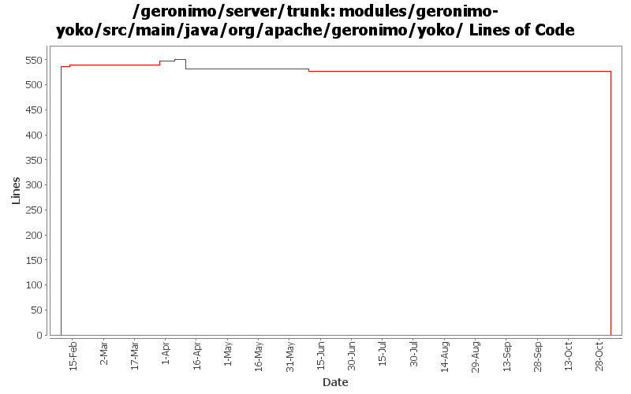

[root]/modules/geronimo-yoko/src/main/java/org/apache/geronimo/yoko

| Author | Changes | Lines of Code | Lines per Change |
|---|---|---|---|
| Totals | 21 (100.0%) | 1107 (100.0%) | 52.7 |
| dain | 7 (33.3%) | 536 (48.4%) | 76.5 |
| rickmcguire | 5 (23.8%) | 527 (47.6%) | 105.4 |
| djencks | 2 (9.5%) | 44 (4.0%) | 22.0 |
| prasad | 7 (33.3%) | 0 (0.0%) | 0.0 |
GERONIMO-3565. Modules distributed amongst framework/modules and plugins
0 lines of code changed in 7 files:
GERONIMO-3246 Cleanup exception handling so stack traces for first failures are not discarded.
2 lines of code changed in 1 file:
GERONIMO-2687. Don't construct default and run-as subjects, get them from a login module. Also creates a separate server-security-config for the security config stuff you probably want to change. Also fixes lots of security problems, including mdb run-as handling.
17 lines of code changed in 1 file:
Fix client ORB configuration problems that would not allow tssconfig information to be specified on the client ORB. Also propagate the TSSCONFIG information to IORs for objects published on the rootPOA.
12 lines of code changed in 2 files:
GERONIMO-3065 Inappropriate logging levels in Yoko SocketFactory class.
6 lines of code changed in 1 file:
GERONIMO-3042 Port of openejb corba classes was based on out-of-date original classes.
507 lines of code changed in 1 file:
GERONIMO-2382 work harder to get our UtilDelegateImpl registered. Also a little code cleanup
27 lines of code changed in 1 file:
Ported CORBA implementation from OpenEJB 2
536 lines of code changed in 7 files: